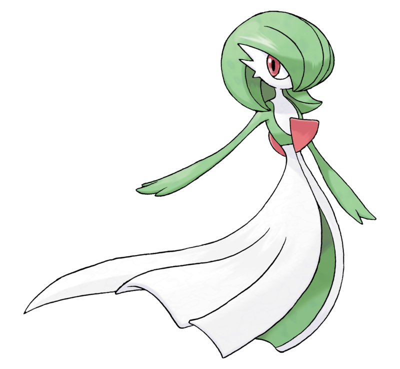
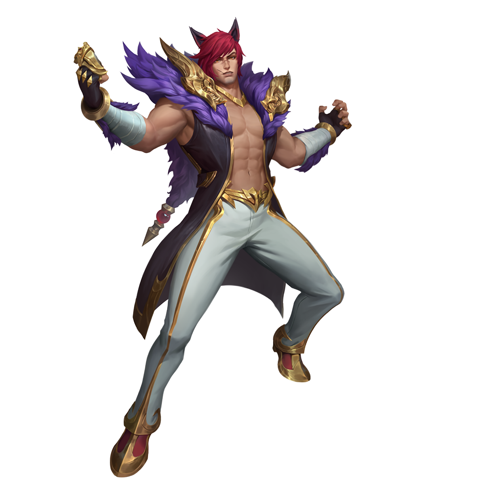

Kirby
Héroe Espada
Señor Martillo
Doctor Curatodo
Mago Rayo
Habilidad de especial:
puede absorber a sus enemigos
y copiar sus habilidades.

Gardevoir
Psíquico
Paz Mental
Fuerza Lunar
Rayo
Habilidad de especial:Sincronía
Si este Pokémon recibe un problema de estado,
el rival también lo sufre.

Sett
Nudillos a Punto
Trastazo
Rompecaras
Espectáculo
Habilidad de especial:Coraje del Foso
Ataca siempre con dos puños; el segundo es más rápido y fuerte,
Entre menos vida tenga Sett, más rápido se cura automáticamente.